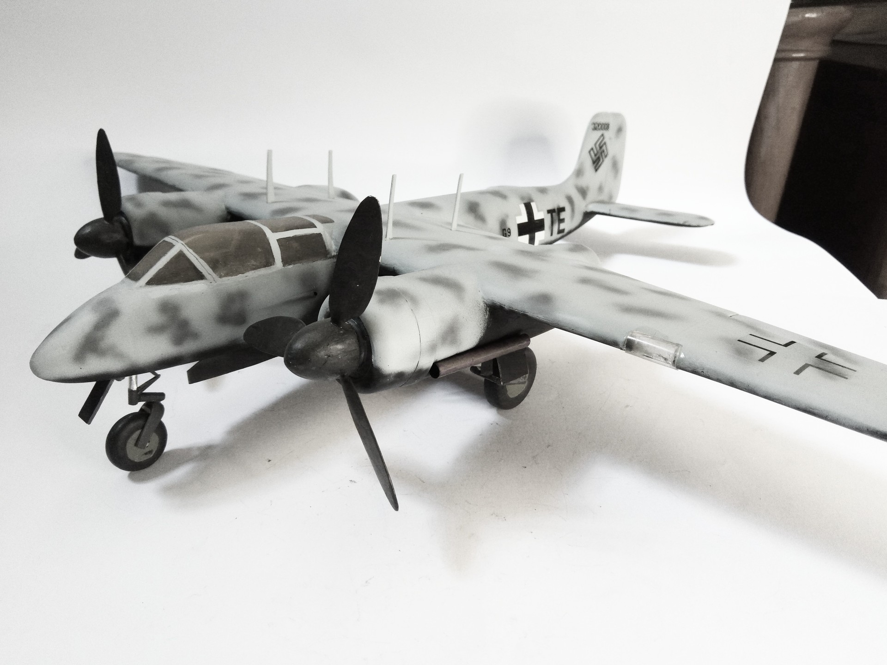

Aerei · scale model archive
Focke Wulf Ta154
Focke Wulf Ta154 — Kit: ID Models vacform, Scale: 1/32. Operational trials with NJG3 at Stade, . with FiG218 radar stab antennas in the wing root.…

Photo gallery
English description
Operational trials with NJG3 at Stade, . with FiG218 radar stab antennas in the wing root. Impressive model size in this scale
#1/32 #IDModels #vacform
Descrizione italiana
Operational trials con NJG3 at Stade, . con FiG218 radar stab antennas nel ala root. Notevole modello dimensioni in questa scala.